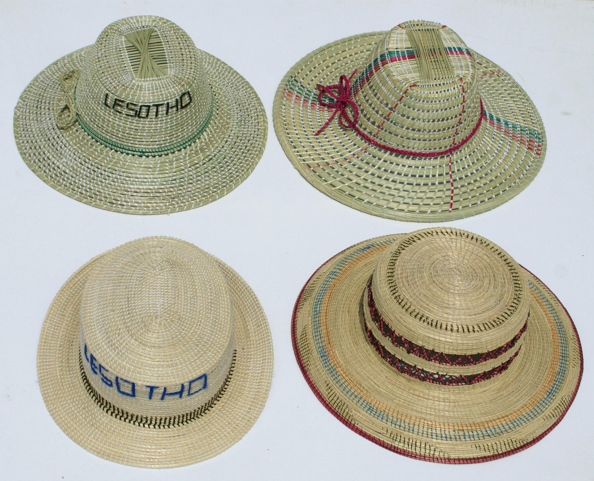
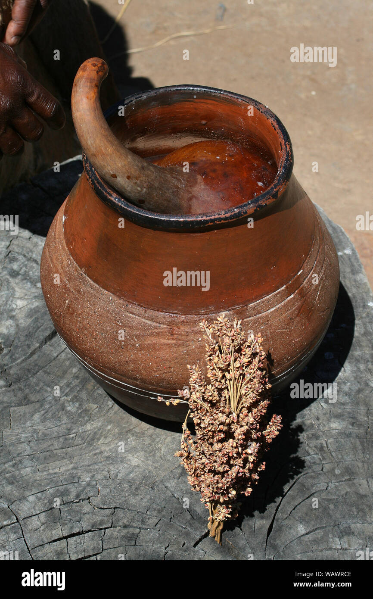

The basotho blanket
The story of the Basotho blanket begins long before the modern nation of Lesotho existed. Its origins are rooted in the 19th century, a time of significant social and political upheaval in the region. The Basotho people, under the leadership of King Moshoeshoe I, were forging a unified kingdom, constantly facing challenges from neighboring tribes and encroaching colonial powers. Clothing played a critical role in establishing identity and unity during this tumultuous link
The basotho hats
The mokorotlo is a distinctive type of hat and is considered a national symbol of Lesotho, a small, landlocked country located within South Africa. It represents a mountain that is of great significance in Lesotho's history lesothocrafts.com
The mokorotlo hat has a unique design, with a tall point or peak at the center, resembling a mountain. This peak is surrounded by a wider, flattened brim.
The shape of the mokorotlo hat is believed to be inspired by the Qiloane Mountain near Thaba Bosiu, a historically significant plateau in Lesotho. The plateau and mountain are linked to the founding of the Basotho nation and its first king, Moshoeshoe I. lesothocrafts.com

While the traditional mokorotlo is specific to Lesotho, its distinctive design has inspired similar straw hats in other regions. These hats, often made for tourists, might not hold the same cultural or symbolic significance as the original mokorotlo but are appreciated for their unique design and craftsmanship. lesothocrafts.com
Pottery
The Basotho people were always known for their innovative and creative range of indigenous crafts. Traditionally the women produced various forms of clay pottery, while the men cleverly plaited grass baskets and hats. These objects were marketed to foreign visitors in Maseru and elsewhere across the border in South Africa. nationalmuseumpublications.co.za
- Lefiso & Lefisoana:
Bowls for serving or storing liquids


{kind=link}